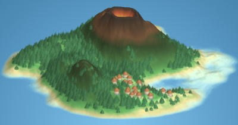
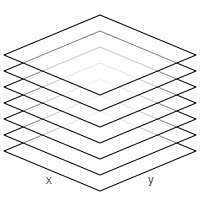
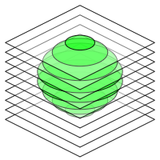
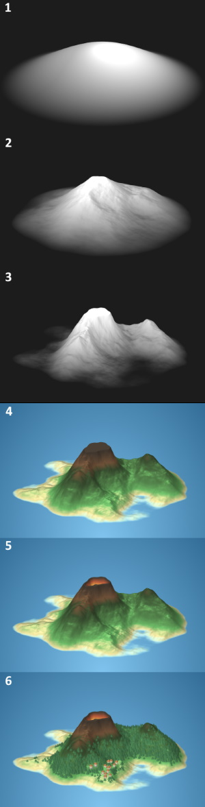

Three dimensional images can be stored using voxels. Voxels are effectively three dimensional pixels. Contrary to common 3D models that store scenes as large collections of triangular planes, voxels can encode volume as well. Additionally, their detail is equal for every part of the scene. The drawbacks however are numerous:
Voxels take up a lot of storage space. Storing colors and surface data of volume interiors that will likely never be rendered need to be stored regardless.
Rendering voxels is slow. Rendering ten thousands of triangles is very doable on modern hardware, but a typical voxel scene has many more voxels than triangles. Also, voxels are often rendered as little cubes consisting of multiple triangles, which makes rendering even slower.
Voxel models are not infinitely precise, so the angle of a surface is hard to determine. If one would zoom in on a 2D pixel image for example, no edge will have a smooth angle. The angle of three dimensional surfaces is however very important to calculate the interaction with light sources in a scene. Without accurate surface angles, shading will not work properly.

Figure 1: A rendered voxel scene.
In this article, I propose a real-time voxel rendering method called layered voxel rendering, while trying to tackle these issues. Additionally, an interactive real-time javascript renderer is demonstrated using three different rendering methods. A procedural island generator is used to provide scenes for the renderers. Figure 1 shows a procedurally generated island rendered using the included renderer. The island generator itself is explained in the appendix.
The rendering method supports
real time voxel rendering at reasonable speed,
a way to store scenes without storing every voxel in it,
and a lighting model that does not require normals to be calculated while rendering.

Figure 2: Stacked images as voxel scene layers.
Voxel layers
The voxel scene that needs to be rendered is first split up in layers; for every vertical layer of voxels, a slice is created, containing all voxels at that layer. The result is a two dimensional image per layer. Every slice is simply an image. When rendering, these images are drawn from the bottom to the top. Figure 2 shows a schematic of a rendered scene, where layers are used to compose a three dimensional image.
Note that all images are scaled down vertically. This scale changes the camera pitch angle; scaling down further points the camera more towards the direction of the horizon. To rotate the scene, all images are rotated along the vertical axis before scaling is applied.
Representing a scene
The voxel scene will be represented using primitive shapes, and, for the sake of the island example, a heightmap shape to represent the terrain. It is clearer and simpler to populate a scene with shapes than voxels. This representation is also much more compact than storing every voxel in the scene. To be able to make the island shown in Figure 1, the following shapes are needed:
A heightmap to render the terrain.
Cones to render the trees and roofs.
Cylinders to render the huts.
The trees in the scene are rendered using cones with a voxel density parameter; this makes the shapes not fully solid. The lower the density, the more voxels are omitted. This creates an effect that works well for plants and trees.
Each shape in the scene has a bounding box, which is a three dimensional box encompassing the shape. For every coordinate inside this box, the shape object will tell whether a voxel exists there. If a voxel exists, the object returns the voxel for that coordinate.
As mentioned in the first section, lighting and shading can be tricky when rendering voxels. To make it fast and accurate, I pre-shade the voxels; when a shape is sampled and when it returns a voxel, it returns a color with shading applied to it. To shade a voxel, the surface angle of that voxel is required. Shapes always give their voxels the surface normal of the nearest surface. Since it is possible to "peek between the layers" (see Figure 2), occluded voxels must still have the color and shading associated with their nearest surface area to prevent ugly rendering artifacs, since they may be partially visible.

Figure 3: Translating a shape to voxel layers.
Translating scenes into layers
Once shapes are properly defined, creating layers is straightforward:
A region to "voxelize" is chosen. Parts of the scene may be omitted, or a scene can be broken up into multiple blocks of layers to make sure not everything needs to be rendered all the time.
A number of layers (which are just images) equal to the height of the render area is created.
For every pixel on every image, the voxel for that coordinate is queried and rendered to its layer.
This process is shown in Figure 3, where a sphere shape is translated to voxel layers. Once the layers are created, they can be sent to the renderer to produce the complete and interactive voxel image.
An interactive renderer
Quality
Renderer
A large full screen version of this renderer can be found here.
Rendering methods
Rendering transformed images is pretty easy, but there are different ways to go about it. I implemented three renderers to compare their performance.
Since I render my layers on canvases in javascript, a canvas renderer is the most obvious choice. This renderer is quite performant compared to the others, since canvas rendering is GPU accelerated on modern browsers.
A WebGL renderer is also included. I'm using the myr.js library, which uses WebGL 2. Converting canvas pixels to WebGL textures takes some time, because all data needs to be copied over. Once the renderer runs, I don't see much difference in performance compared to the canvas renderer. Note that this option only appears in the example above if your browser supports WebGL 2.
Finally, I implemented a CSS renderer. Here, every layer is instantiated as an HTML element and transformed using CSS transforms. On most browsers, this method is by far the slowest. To my surprise however, it was very performant on Microsoft Edge, in some instances even faster than both the canvas and WebGL renderers on other browsers. I cannot explain this.
Because all the renderers need to do is rendering transformed images, they all produce the same image quality. When implementing this technique, the method that runs best on the target platform should be chosen.
Conclusion
The proposed method can be extended in a number of ways:
Scenes can be split up into chunks. Currently, a lot of empty air and invisible underground voxels are rendered (but never seen). Splitting up the scene into chunks and omitting chunks that do not require rendering both improves performance (while also reducing the memory footprint) and allows invisible parts of the scene to be rendered only when they come into view. Additionally, the scene size is no longer restricted, since shapes are only queried when rendering chunks that contain them.
Perspective transformation can be added. For many 3D applications, perspective rendering is preferred over isometric rendering.
A level of detail criterion can be added. Currently, all voxels are rendered at the maximum resolution. It would however be possible to render half or quarter resolution layers that can be displayed for distant parts of the scene until the camera comes closer. Note that this only makes sense when perspective is used, since distant objects don't become smaller in isometric renderers.
A depth buffer can be used while rendering. If we have a depth buffer, traditional 3D models can be rendered into the scene. One could then compose a hybrid scene, for example an environment with voxel terrain that has traditional 3D objects interacting with it.
The proposed method has some drawbacks too:
The camera pitch angle must be within a certain range. If the camera is pitched horizontally enough, you can see too far under the vertical layers. Voxels that should not be seen are then revealed, creating messy images.
Layers need to be pre-rendered. Another rendering pass is required for dynamic objects. Rendering large moving objects could be slow. This performance hit can be avoided by using a depth buffer while rendering the scene; after the chunks have been rendered, dynamic objects can then be inserted into the scene as traditional 3D models using the populated depth buffer.
Rendering is still quite slow compared to traditional 3D rendering. There must be a good reason for using voxels to make this method interesting. Once the layers have been rendered though, this method can be implemented in almost every framework and on almost every device, no 3D hardware or software is required (the CSS renderer shows it even works in plain HTML for example).
Appendix: procedurally generating islands
The islands displayed by the renderer are essentially decorated heightmaps; heightmaps are grayscale images, where black pixels represent the lowest height and white pixels the highest height. This heightmap can be translated into a three dimensional terrain. Figure 4 shows the steps the algorithm takes to create the heightmap and transform it into an island.

Figure 4: The stages of generating an island.
Because the generated terrains are islands, they should be surrounded by water on all sides. To ensure this property, the entire heightmap is multiplied by a "flare" (seen in step 1 of figure 4). The height of the flare depends on the distance to the island center, and will be $1$ in the center of the island and $0$ outside the island radius. The value is $(\frac{cos(\pi \cdot d) + 1}{2})^p$, where $d$ is the distance towards the island center in the range $[0, 1]$ and $p$ is a power that can be decreased to raise the island edges, and increased to lower the edges. Increasing $p$ thus gives the island a more pointy shape, while decreasing it increases the islands surface area.
The heightmap is multiplied by coherent random noise; I used cubic noise with several octaves, but Perlin noise or simplex noise would suffice as well. Step 2 shows a random noise multiplied by the flare in step 1.
The island heightmap in step 2 still looks a bit bland. It is too round, too predictable, and boring to look at because there are no interesting details or terrain features on it. In reality, terrain is shaped by erosion. This is a fairly intensive process to simulate, but a similar effect can be created using a simple trick. This step shows the heightmap from step 2 after multiplying it by a constant number and applying a power to it. Each height value $h$ thus becomes $m \cdot h ^ p$ where $m$ is a multiplier with a value over $1$ and $p$ is a power value over $1$. Because all heightmap values are in the range $[0, 1]$, applying power $p$ makes all values lower, but valleys are lowered more than peaks; therefore, mountain features are exaggerated. Because all height values become lower, every value is multiplied by a constant higher than $1$ to make sure the island does not become too flat. After applying this process, two mountains become clearly visible.
Color is applied to the heightmap using a gradient. Steps 1 to 3 also use a color gradient to colorize the island, but it's a simple one going from black to white. A more elaborate gradient starting at blue, going through a sand colored beach phase, passing through a green forest phase and ending in a brown rock colored phase gives the island natural colors. Applying this gradient is not really enough: terrain color is not just influenced by altitude, but also by slope. A steep slope in a forest colored area should get a more rocky color, even though it is not yet at mountain height. To do this, I sample the gradient at a further point if the terrain is steep. Instead of sampling the gradient at $h$, I sample it at $h ^ {\vec{n} \cdot \vec{u}}$ where $\vec{n}$ is the surface normal of the terrain at the current location and $\vec{u}$ is a vector pointing upwards. The dot product of these two vectors will give a number in the range $[0, 1]$, which can be applied as a power to $h$ in the range $[0, 1]$ to increase it towards $1$ when the difference between $\vec{n}$ and $\vec{u}$ becomes greater.
The island in step 4 has a strange feature: the mountain top is flat. At the plateau, all height values are $1$. I have chosen the multiplier and power values from step 3 such that heightmap values can be higher than $1$, but they are capped. In this step, I lower these plateaus again by subtracting $height - 1$ from the height value. Instead of applying the island gradient, a volcano gradient is applied that shows lava colors as the pit becomes deeper.
The island is decorated by trees and huts in the final step. Trees grow only within a certain height range, and are colored a little darker when they grow on the islands shadow side. The village is placed near flat and low terrain.